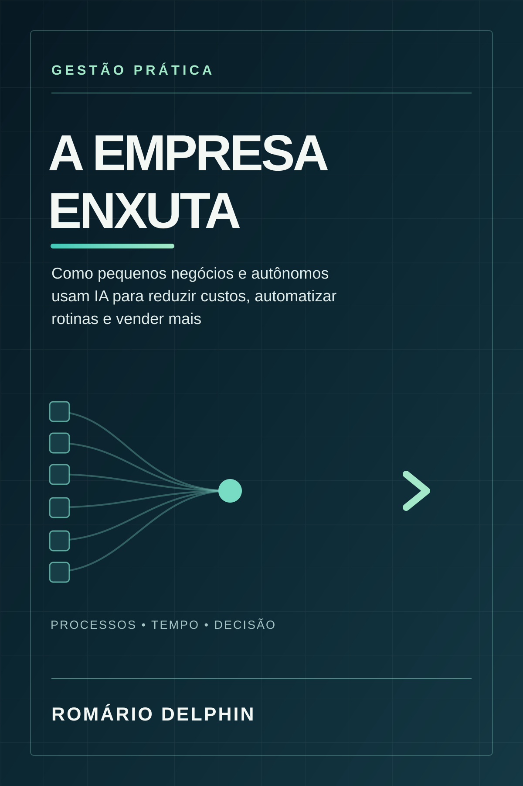

Mentoria de IA
Acompanhamento para servidores, assessores e gestores aplicarem IA com método nas suas rotinas.
Conhecer o acompanhamento ↗Capacitação para servidores, gestores e assessores que querem aplicar IA à realidade das instituições públicas.
Romário DelphinMentor de IA · Palestrante · Educador · Autor
Da escolha do modelo à aplicação na rotina pública. Ensino o uso das ferramentas e os fundamentos para construir soluções com método.
O conhecimento que conecta as ferramentas.
Para câmaras municipais, prefeituras, secretarias, escolas de governo e equipes que trabalham a serviço da sociedade.
Acompanhamento para servidores, assessores e gestores aplicarem IA com método nas suas rotinas.
Conhecer o acompanhamento ↗Inteligência artificial, transformação digital e os desafios do Legislativo e da Administração Pública.
Explorar os temas ↗Formação em IA, SAPL, Portal Modelo, comunicação pública, agentes, processos e automação para equipes públicas.
Conhecer os cursos ↗Uma mentoria começa pela sua realidade institucional: as rotinas, os documentos, as demandas e as oportunidades de melhoria no serviço público.
Para servidores, assessores, gestores e lideranças públicas. O acompanhamento combina explicação acessível, exercícios e revisão das aplicações, considerando proteção da informação e responsabilidade institucional. Formato, duração e escopo são definidos na conversa inicial.
Identificar objetivos, desafios e o ponto de partida.
Estruturar informações e critérios para orientar a IA.
Experimentar ferramentas e fluxos em tarefas reais.
Verificar respostas, reconhecer limites e aperfeiçoar o uso.
Temas para encontros de servidores, eventos legislativos, escolas de governo e lideranças públicas. Conteúdo adaptado ao órgão e ao público.
Possibilidades de uso em rotinas administrativas, organização de informações e atendimento, com revisão humana.
Novas competências, pensamento crítico e aprendizagem para equipes da Administração Pública.
Pesquisa, documentos, conhecimento institucional e modernização com supervisão humana.
Proteção da informação, rastreabilidade e critérios para revisar respostas no contexto institucional.
Organização de informações, apoio à preparação de sessões e consulta a documentos, com conferência pela equipe legislativa.
Como conectar pessoas, processos, documentos e serviços digitais à realidade de cada câmara.
Uma visão prática de mudança institucional: diagnóstico, prioridades, capacitação e evolução dos serviços.
Possibilidades de apoio à pesquisa e organização de oportunidades, a partir da proposta autoral Capta IA.
Possibilidades de conectar portais institucionais em Plone, informações do SAPL e inteligência artificial para organizar conteúdo e melhorar os serviços digitais das câmaras.
Planejamento, organização de informações e apoio à produção de conteúdo institucional, com linguagem acessível, conferência de fontes e revisão editorial.
Como mapear necessidades, identificar oportunidades e conectar IA, automação e integrações à transformação digital das instituições públicas.
Trilhas de capacitação sob demanda. Ementa, carga horária, modalidade e condições são definidas em proposta conforme o objetivo da instituição.
Para quem: Servidores e equipes administrativas.
Conteúdo: Fundamentos de IA generativa, possibilidades de uso, limitações e revisão humana.
Solicitar este curso ↗Para quem: Equipes de apoio e gestão.
Conteúdo: Contexto e prompts, síntese de informações, apoio à redação e organização de documentos com verificação.
Solicitar este curso ↗Para quem: Assessores, parlamentares e servidores de câmaras.
Conteúdo: Pesquisa legislativa, acervos institucionais, documentos e possibilidades de integração com o SAPL.
Solicitar este curso ↗Para quem: Equipes de inovação, TI e gestão.
Conteúdo: Mapeamento de processos, bases de conhecimento, agentes e supervisão humana em fluxos institucionais.
Solicitar este curso ↗Para quem: Servidores de câmaras, assessores e equipes de apoio legislativo.
Conteúdo: Organização e consulta de matérias, documentos e informações legislativas, conforme o fluxo de trabalho da câmara.
Solicitar este curso ↗Para quem: Equipes legislativas, de gestão e tecnologia.
Conteúdo: Pesquisa assistida, organização de acervos, RAG e possibilidades de integração com informações do SAPL, com rastreabilidade e revisão humana.
Solicitar este curso ↗Para quem: Equipes de comunicação, tecnologia e gestão de câmaras municipais.
Conteúdo: Plone e Portal Modelo, organização de conteúdo, integração com informações do SAPL e APIs, e aplicações de IA em serviços digitais.
Solicitar este curso ↗Para quem: Equipes de comunicação, assessorias e gestores públicos.
Conteúdo: Planejamento de conteúdo, redação assistida, adaptação de linguagem, organização de fontes e revisão de materiais institucionais.
Solicitar este curso ↗Para quem: Gestores, equipes de inovação, tecnologia e áreas administrativas.
Conteúdo: Diagnóstico e desenho de processos, identificação de oportunidades, definição de requisitos, automação e integrações. Conexão entre a demanda institucional e a solução digital.
Solicitar este curso ↗As atividades consideram o contexto institucional, a proteção de dados e a validação por pessoas responsáveis. Os exemplos devem utilizar informações autorizadas.
Conecto a realidade do serviço público às possibilidades da tecnologia: mapeamento de processos, inteligência artificial, automação, portais e integrações.
Minha atuação começa por entender o problema e organizar o contexto. A partir disso, estruturo caminhos de aplicação, desenvolvo soluções e capacito as pessoas para utilizá-las.
Projeto autoral de Romário Delphin voltado à captação de recursos com inteligência artificial: apoio à pesquisa e organização de oportunidades para o setor público.
Uma iniciativa que conecta minha experiência institucional à aplicação de IA. Conheça a proposta, as áreas de aplicação e o estágio documentado no portfólio de projetos.
Inteligência aplicada à
captação de recursos.
Livros e materiais para aprofundar a relação entre inteligência artificial, negócios, agronegócio e gestão pública.

Um guia prático para organizar processos, aplicar IA em marketing, atendimento e finanças, e medir resultados com revisão humana. Inclui prompts e um plano de ação de sete dias.
Baixar livro ↓Como IA, automação e transformação digital estão redefinindo a tomada de decisão e os novos modelos de gestão.
Baixar livro ↓Da automação de tarefas à autonomia de decisões, com dados tratados como infraestrutura estratégica.
Baixar livro ↓Minha atuação é centrada em inteligência artificial aplicada ao setor público. Conecto formação de pessoas, experiência no Legislativo e desenvolvimento de soluções digitais aos desafios de servidores, gestores e instituições.
Sou mentor, palestrante, professor e autor de Agro 5.0, A Revolução Silenciosa e A Empresa Enxuta.
Conheça formatos e temas para câmaras municipais, prefeituras, escolas de governo e equipes públicas. Brasília · atuação nacional.
Mentoria, palestras e capacitações para o Legislativo e a Administração Pública. Conte o objetivo da sua equipe.